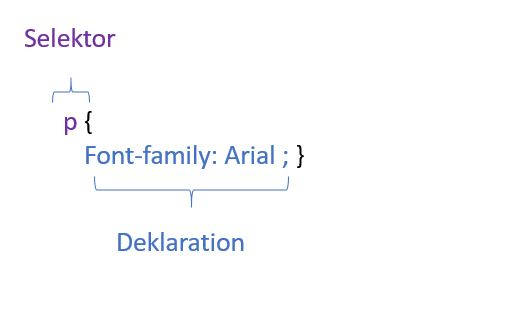
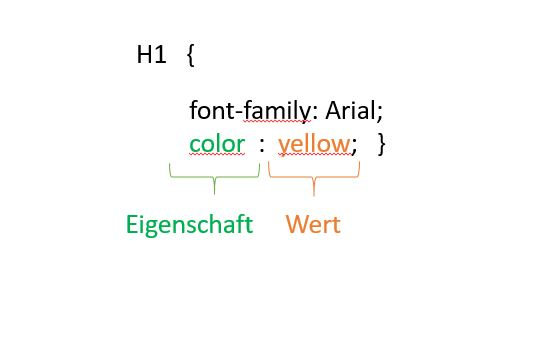
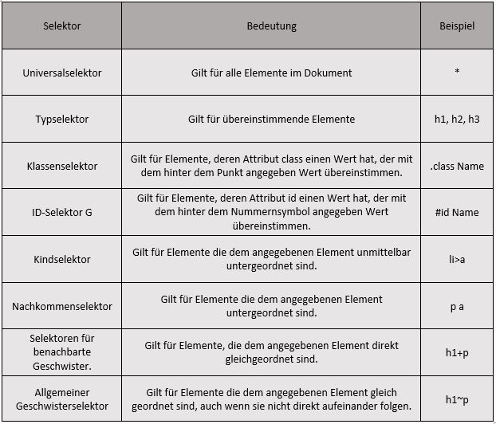

CSS
CSS wendet formatierungsregeln auf HTML-Elementen an. Anders formuliert es ist verantwortlich für alles
gestaltungstechnische
auf einer Webseite. Eine CSS – Regel besteht aus einem Selektor und einer Deklaration.
CSS einbinden
Um die CSS Regeln auf dem HTML wirken zu lassen muss man die beiden Dokumente verlinken. Das macht man
indem man im head
schreibt
"link herf="css/stylesheet.css" type="text/cssF" rel="stylesheet"".
"Herf" gibt den Pfad zur CSS Datei an. "Type" gibt die Art der Verknüpfung. Der Wert muss
text/css"
lauten.
"Rel"
gibt die Bezeichnung der HTML-Seite und der verknüpften Datei an. Hierbei muss der wert stylesheet
sein.
Das
ist die einfachste Weise um in einer CSS Datei Regeln aufzustellen. Man kann aber auch im head das
Element
style"
schreiben und die CSS Regeln in html Dokument integrieren, ist aber nicht zu empfehlen
CSS Regel
Der Selektor:
Selektoren geben an auf welche der HTML-Elemente die Regel angewendet werden soll. eine Regel kann auch
auf
mehrere Elemente
wirken und man kann auch in einem Selektor mehrere Regeln definieren. Die Regeln werden mit dem
Semikolon
getrennt.
Die Deklaration:
Sie besagt wie das im Selektor beschrieben Element formatiert werden soll. Die Deklaration selber wird
in
"Eigenschaften"
und "Wert" unterschieden.
Eigenschaften:
Die Eigenschaften bezeichnen den Aspekt des Elements den sie bezeichne wollen. Zum Beispiel Schrift,
Farbe,
Typografie, Breite
usw.
Wert:
Sie nennt die gewünschte Einstellung der Eigenschaften. Zum Beispiel will man die Eigenschaft "Color" kann man mit dem Wert "Blue" die Farbe bestimmen.
 Selektor
Es gibt ganz verschiedene Arten von Regeln die auf ganz bestimmte HTML Elemente wirken sollen. Um diese anzusprechen gibt es die Selektoren. In der nachfolgenden Tabelle sehen sie die Selektoren, ihre Bedeutung und Beispiele. Bei CSS-Selektoren wird Gross-Kleinschreibung unterschieden, das bedeutet das Attribute und Werte genau übereinstimmen sollen. Wenn es zwei gleiche Regeln gibt, hat das letzte der beiden Regel die Priorität. Wenn einer der Selektoren spezifischer ist als der andere, so hat dieser die Priorität. Eigenschaftswerte kann man mit "!important" angeben, damit dieser Wert als wichtiger eingestuft wird als alle anderen.
Text
Bei der Auswahl der Schriftart muss man beachten das, die gewünschte Schriftart auf dem Computer des
Benutzers auch installiert
ist, ansonsten kann der Browser nicht die Schriftart nicht darstellen.
Schriftart:
Mit font-family kann man die Schriftart bestimmen. Der Wert ist der Name der gewünschten Schriftart.
Am besten ist
es, wenn man zwei verschiedenen Schriften aus der gleichen Familie wählt. Dies kann nützlich sein,
falls
ein
Benutzer nicht die erste Schrift nicht besitzt, wird automatisch auf die zweite Schrift geändert. Zum
Schluss
steht noch der Name der Schriftart. Die Schriftart wird in Serifenschrift (serif), Serifenlosenschrift
(sans-serifs),
Nichtproportionaleschrift (mionospace) Schreibschrift (cursive) und Schmuckschrift (fantasy).
Schrift grösse:
Die Eigenschaft font-size benutzt man um die Schrift grüsse anzugeben. Die Schrift
wird
gewöhnlich in Pixel angegeben. Die Standardgrösse der Schriften ist 16px, denn die meisten Menschen
diese
Schrittgrösse
angenehmer zu lesen. Bei der Angabe der Schriftgösse in Pixel ist die beste Möglichkeit um die Schrift
auf
jeder
Computer die vorgesehene Schriftart hat.
Fett:
font-weight ist die Eigenschaft indem man den Text fetten kann. Der Wert dazu ist «bold»,
wenn
man einen fette Schrift dünn darstellen will nimmt man den Wert «normal».
Kursiv:
font-style benutz man wenn man die Schrift kursiv darstellen möchte. Die Werte «italic»
(kursiv)
und «oblique» (schräg Schrift) machen die Schrift schräg. Wenn man eine Schrägschrift normal darstellen
möchte,
dann benutzt man «normal».
Umschalten Gross-Kleinschreibung:
text-transform sorgt dafür das man zwischen Gross- und
Kleinbuchstaben
umschalten kann. Der Wert «upercase» macht den Text in Grossbuchstaben, «lowcase» macht sie in
Kleinbuchstaben
und «capitalize» schreibt den Anfangsbuchstaben jedes Worts gross.
Textausschmückungen:
text-decoration wird mit den werten none, underline, overline, line-through
und
blink angewendet. «none» entfernt alle Ausschmückungen bei einem Text, zum Beispiel wenn man einen Link
angibt
wird es immer unterstrichen angezeigt, um das zu entfernen schreibt man none. Aber manchmal will man
absichtlich
unterstrichenen Textteile, dafür schreibt man «underline». Man kann auch eine Linie über den Text
ziehen,
indem
man «overline» schreibt. Dann gibt es noch durchgestrichene Texte, dafür gibt es den Wert
«line-through».
Wenn
man es ganz auffällig machen möchte, kann man sogar mit «blink» den Text so animieren das er blinken.
Zeilenabstand:
Der Teil eines Buchstabens, der unter die Grundlinie hinausgeht, wird als
«Unterlänge»
bezeichnet, während der höchste Punkt als «Oberlänge» genannt wird. Der Zeilenabstand wird vom unteren
Rand
der
Unterlänge einer Zeile um Oberlänge der folgenden Zeile gemessen. Die Eigenschaft «line-height» hilft
einem
den
Zeilenabstand zu bestimmen, als wert kann man Pixel, em und so weiterverwenden.
Buchstaben- und Wortabstände:
Laufweite ist der Fachbegriff für Abstände zwischen den Buchstaben.
Um
zu bestimmen welchen abstand sie haben möchten, kann man den Wert «letter-space» benutzen. Dies wird
dann
benutzt,
wenn man einen Text oder Überschriften mit Grossbuchstaben schreibt, bei texten mit
Gross-Kleinbuchstaben
ist
es nicht zu empfehlen, denn sie kann die Lesbarkeit beeinträchtigen. Der Wortabstand ist meistens
0.25em,
es
ist unwahrscheinlich, dass man diese Einstellung benutzt, aber man ein grösserer Wortabstand verbessert
die
Lesbarkeit.
Deswegen gibt es die Eigenschaft «word-spacing», der Wert ist auch em.
Ausrichtung:
Mit «text-align» kann man die Ausrichtung des Textes bestimmen. Man kann die Werte
«left»
(links), «right» (rechts), «center» (zentriert) und «justify» (Blocksatz) angeben.
Vertikale Ausrichtung:
Die vertikale Ausrichtung dient nicht zur Zentrierung von «p» oder «div»
Elementen,
sondern ist dafür zuständig um «img» (Bilder), «em» (Zitate) und «strong» (wichtiger Text) elemente
Auszurichten.
Die werte sind «baseline» (richtet die Schrift-Grundlinie des Elements an der Grundlinie des
Elternelements
aus),
«sub» (senkt die Grundlinie der Box auf die Höhe der Sub-Schrift des Parent-Elements, ohne die
Schriftgröße
zu
verändern), «super» (hebt die Grundlinie der Box auf die Höhe der Super-Script des Parent-Elements,
ohne
die
Schriftgröße zu verändern), «top» (richtet den Inhalt der Box an der Oberkante der Linebox aus),
«text-top»
(richtet
die Box-Oberkante an der Oberkante des Parent-Inhaltbereichs aus), «middle» (richtet die Kind-Box-Mitte
an
der
Grundlinie plus der Hälfte der x-Höhe des Elternelements aus),«bottom» (richtet den Inhalt der Box an
der
Unterkante
der Linebox aus) und «text-bottom» (richtet die Box-Unterkante an der Unterkante des
Parent-Inhaltsbereichs
aus).
Text einrücken: Das Element «text-indent» benutzt man um eine Zeile einzuziehen, mit den Werten Pixel
oder
em. Schlagschatten: Mit der Eigenschaft «text-shadow» kann man eine gewöhnliche dunklere Version des
Textes
erzeugen.
Um diese darzustellen braucht man drei Längenangaben. Die erste zeigt wie weit der schatten nach links
oder
nach
rechts eingestellt sein muss. Der zweite wert zeigt wie weit nach oben oder unter sie angezeigt werden
soll
und
zum Schluss noch die Unschärfe des Schattens. Die ersten zwei Werte werden in Pixel angegeben und das
letzte
ist ein Farbwert.
Fonts
Wenn man verschiedene Arten von Schriften in ihr HTML Dokument einfügen möchte, kann man mit Google Fonts einige Schriften herunterladen. Man muss beachten das man es nicht übertreibt. Der hier angegebener Link, führt zu Google Fonts. Dort kann man verschidene Schriftarten herunterladen und dann den Link in CSS einfügen.
Farbe
Jede Farbe die auf dem Bildschirm angezeigt wird, wir aus einer Farbmischung von rot, grün und blau
dargestellt. Um die
gewünschte Farbe
zu wählen, kann man den Farbwähler benutzen. Mit der Eigenschaft color bestimmt man die Farbe des
Textes.
In
CSS
kann man in drei verschiedenen Arten die Farbe festlegen.
RGB Werte:
Hiermit werden die Farben durch die Angabe der Menge von rot, grün und blau definiert.
Sie
stehen ist den Zahlen zwischen 0 und 255.
HEX-codes:
Der sechsstellige Code zeigen auch hier die Farben rot grün und blau in dem
Hexadezimalen
Bereich.
Farbnamen:
Es gibt 147 vordefinierte Farbnamen die alle Browser verstehen können. Diese
Farbpalette
wird meist als zu eingeschränkt bezeichnet. Ausserdem kann man sich die Farbnamen nicht merken,
deswegen
stellt
CSS automatisch auf RGB um sobald man den Farbnamen eingegeben hat.
Info: Auf Adobe Color CC kann man
verschiedene
Farben in RGB und HEX definieren.
Deckkraft:
Mit den neusten Browsern kann man mit opacity oder RGBA die Deckkraft bestimmen. Die
Eigenschaft
opacity ist in CSS3 neu eingeführt worden, um die Deckkraft des Elements und Kindelement festlegen zu
können.
Der Wert ist eine Zahl zwischen 0 und 1.0. Zum Beispiel 0.5 ist 50% Denkkraft. Es gibt die auch die
Eigenschaft
RGBA, bei dem der vierte Wert a für alpha, der auch in einem Wert von 0 bis 1.0 steht.
Um die Hintergrundfarbe zu bestimmen background beziehungsweise background-color eingeben und als wert
kann
man eine der oben genannten farb-codes verwenden. Wenn man keine Hintergrundfarbe angibt, dann ist der
Hintergrund
transparent. Diese Regel funktioniert nur, weil CSS die einzelnen HTML Elemente, so behandelt als ob
sie in
einem
Kasten ständen.
Kästen
Abmessungen von Kästen:
Standartgemäss ist ein Kasten geraden so gross wie sein Inhalt. Mit den
Eigenschafften
«height» und «width» können die Abmessungen festgelegt werden. Man kann als Wert Pixeln oder Prozent
angeben.
Die Bereite einschränken:
Manche Seiten sind so eingestellt das sie sich dem Benutzerbildschirm
anpassen.
Dabei wird die Eigenschafft «mind-width» benutzt, sie gibt die Mindestbreite an. Wenn man aber die
Höchstbreite
angeben möchte, dann gibt man «max-width» an. Auch hier ist der Wert Pixel oder Prozent. Diese Funktion
ist
hilfreich
um den Seiteninhalt lesbar zu halten.
Die Höhe einschränken:
Genau so wie man die Breite einschränken kann, kann man auch die Höhe
einschränken.
Dies kann man mit «min-height» und «max-height»
Überlaufender Inhalt:
Wenn der Inhalt grösser ist als der Kasten, kann man mit der Eigenschaft
«overfloat»
den Browser sagen ob, er mit den Werten den Inhalt verbergen (hidden) oder den Kasten mit einem
Rollbalken
zum
scrollen (scroll) versehen will.
Listen Tabellen Formulare
Aufzählungspunkte gestallten:
«list-style-type» benutzt man für die Gestaltung der
Aufzählungspunkte
für
die «ol, ul, li» Elemente. Für Untergeordneten Listen sind die Werte none,circle, disc , square
verfügbar.
Für
geordnete listen sind decimal (1,2,3), decimal-leading-zero (01,02,03) ,lower-alpha(a,b,c,... ),
upper-alpha (A,
B,C,...),
lower-roman (i. ii. iii.) , upper-roman (I II III) verfügbar.
Aufzählungsunkte aus Grafiken:
Mit der Eigenschaft «list-style-image» kann man eine Grafik
als
ein
Aufzählungspunkt verwenden. Diese Eigenschaft funktioniert nur bei ul oder li Elementen. Der Wert fängt
mit
url
an darauf folgt in Klammern und Anführungszeichen der link zum Bild.
Aufzählungsunkte Position:
«list-style-position» kann die Werte «outside» (die
Aufzählungspunkte
befinden
sich links neben dem Textblock) oder «inside» (befinden sich innerhalb der des Textkastens)
Tabelleneigenschaften:
Eine Tabelle besteht aus mehreren Eigenschaften. Hier einige
Eigenschaften
um
eine einfache Tabelle zu erstellen. «width» legt die Breite der Tabelle und «padding» den Abstand
zwischen
den
Rahmen der einzelnen Tabellenzellen fest Um die Inhalte der Tabellenkopfzeilen in Grossbuchstaben zu
machen
gibt
es den Code «text-transform:uppercase». Für zusätzliche Formatierungen gibt es «letter-spacing» und
«font-size».
Um den Rahmen zu machen, benutzt man die Eigenschaft «border» und «text align» richtet den Text aus und
«background-color»
macht alles Farbig.
Formulare gestallten:
Genauso wie bei den Tabellen, bestehen die Formulare aus mehreren
Eigenschaften.
Hier einige Eigenschaften um ein einfaches Formular zu gestalten:
font-size, color,
background-color,
border,
border-radius, :focus (Hintergrundfarbe bim scheiben verändern),:hover, usw.
Bilder
Die Bild-Grösse kann man mit «width» und «height» verstellen. Mit den Eigenschaften «float» oder
«align»
kann man die Bilder
ausrichten und mit «display-bock» kann man sie Zentrieren.
Hitergrundbilder:
Wenn man ein Bild als Hintergrundbild einfügen möchte, schreibt man den Code
{background-img: url ("Pfad");}
Bilder widerholen:
Man kann Bilder wiederholen mit der Eigenschaft «background-repeat», als Wert
kann
man «repeat-x» (horizontal wiederholen) oder «repeat-y» (vertikal widerholen) benutzen. Man kann auch
«no-repeat»
benutzen, dann wird das Bild nur einmal angezeigt und mit «background-attachment: fixed oder scroll»
kann
man
das Bild fixieren oder beim Scrollen bewegen lassen. Um die Position zu bestimmen kann man die
Eigenschaft
«background-position»
mit den Werten «left-top, left-center, left-bottom, center-top, center-center, center-bottom,
right-top,
right-center,
right-botto» gebrauchen.
Box-Model
Border (Rahmen):
Der Rahmen trennt die Aussenkannte eines Kastens von der eines anderen. Mit der
Eigenschaft
«boder-widht» kann man bestimmen ob man den Rahman thin, medium oder thick machen möchte diese, man
kann
aber
auch einen Pixel oder Prozent wert eingeben. Man kann auch einzelne Rahmenteile ansprechen, indem man
border-top-width,
border-right-width, border-bottom-width, border-left-width als Eigenschaft angibt und die oben
genannten
Werte
angibt.
Rahmenart:
Mir «border-style» kann man die bestimmen ob der Rahmen eine einfache Linie
(solid)
oder
eine Reihe von quadratischen punkten (dotted) usw. sein sollte.
Rahmenfarbe:
Die Farben kann man als RGB oder Hex Codes angeben. Auch hier kann man mit
border-top-color,
border-right- color, border-bottom-color, border-left-color die Rahmenteile bestimmen.
Margin (Aussenrand):
Der Aussenrand liegt ausserhalb des Rahmenkannte. Sie wird benutzt um
einen
Abstand
zwischen den Rahmen zweier abgegrenzten Kästen zu bilden. Der wert wird meistens als Pixel angegeben.
Man
kann
die einzelnen Seiten eines Kastens werte angeben, indem man margin-top, margin -right, margin -bottom,
margin
-left oder margin: 10px 20xp 30px 40px angibt. Mit dem Wert auto kann man den Inhalt zentrieren.
Padding
(Innenrand):
Der Innenrand ist der Raum zwischen dem Rahmen und dem eingeschlossenen Inhalt. Durch
den
Innenrand
kann man den Inhalt besser leserlich machen. Auch hier wird meistens Pixel als Wert benutzt und hat die
Möglichkeit
alle Seiten einzeln anzusprechen, indem man padding-top, padding-right, padding-bottom, padding-left
als
Eigenschaft
angibt. Es gibt auch die kurz Fassung beidem man padding: 10px 20xp 30px 40px als Code angibt.

Flex-Box
Flex-Richtung:
Mit der «flex-direction» wird die Richtung festgelegt. Mit den Elementen
row (Standardeinstellung): von links nach rechts hinein ltr; von rechts nach links rein rtl.
row-reverse: von rechts nach links rein ltr; von links nach rechts hinein rtl.
column: oben nach unten
column-reverse: unten nach oben
Flex-Wrap:
Standardmäßig versuchen alle Flex-Elemente, in eine Zeile zu passen. Man kann
sie aber
mit
«flex-wrap» Eigenschaft umschließen lassen. Die werte sind
nowrap (Standardeinstellung): Alle
Flex-Artikel
befinden sich in einer Zeile wrap: Flex-Elemente werden in mehrere Zeilen von oben nach unten
umgebrochen.
wrap-reverse:
Flex-Elemente werden von unten nach oben auf mehrere Zeilen umbrochen. Inhalt rechtfertigen:
«justify-contend»
definiert die Ausrichtung entlang der Hauptachse. Es hat auch eine gewisse Kontrolle über die
Ausrichtung
von
Elementen, wenn diese die Linie überlaufen.
• flex-start (Standardeinstellung): Elemente werden zur Startzeile gepackt
• flex-end: Artikel werden gegen Ende gepackt
• center: Elemente werden entlang der Linie zentriert
• space-between: Artikel werden gleichmäßig in der Zeile verteilt; Der erste Eintrag ist in der
Startzeile,
der letzte Eintrag in der Endzeile
• space-around: Elemente werden gleichmäßig in der Zeile verteilt und haben
denselben Platz um sie herum.
• space-evenly: Elemente werden so verteilt, dass der Abstand zwischen zwei beliebigen
Elementen (und dem Abstand zu den Rändern) gleich ist. Ausrichten: Die Eigenschaft «align-items»
definiert das
Standardverhalten
für die Anordnung von Flex-Elementen entlang der Querachse in der aktuellen Zeile.
• flex-start: Die
Margin-Kante
des Gegenlaufs der Elemente wird in die Querstartlinie eingefügt
• flex-end: Die Randkante der Elemente am
Kreuzende
wird an der Linie des Kreuzendes platziert.
• center: Elemente werden in der Querachse zentriert
• baseline: Elemente werden so ausgerichtet, wie ihre Basislinien ausgerichtet sind
• stretch
(Standardeinstellung):
Dehnen, um den Behälter zu füllen (Mindestbreite / Maximalbreite beachten)
Inhalt ausrichten:
Durch «aligh-content» werden die Linien eines Flex-Containers
innerhalb
ausgerichtet,
wenn zusätzlicher Platz in der Querachse vorhanden ist.
• flex-start: Zeilen, die an den Anfang des Containers gepackt sind
• flex-end: Zeilen bis
zum
Ende
des Behälters verpackt
• center: Zeilen in der Mitte des Containers verpackt
•
space-between:
Linien
gleichmäßig verteilt; Die erste Zeile befindet sich am Anfang des Containers, die letzte Zeile am
Ende
•
space-around: gleichmäßig verteilte Zeilen mit gleichem Abstand um jede Zeile
• stretch
(Standard): Die
Linien
werden so vergrößert, dass der verbleibende Speicherplatz belegt wird
Wenn man noch mehr informationen braucht, kann man auf css-tricks
mehr erfahren.
Media Queris
Die @media Regel wird verwendet, um einen Block von CSS-Eigenschaften nur einzuschließen, wenn eine bestimmte Bedingung erfüllt ist. Man benutzt es damit man auf kleineren Geräten zum Beispiel Handys, ein angenehmes erscheinen der Webseite zu haben. Wenn die Breite kleiner als 768px ist, sollten wir das Design ändern, wenn die Breite größer als 768px wird. Die kann man mit dem Code @media (max-width: 768px). Hier ist ein Link, um mediaqueries auszuprobieren. Mediaqueries